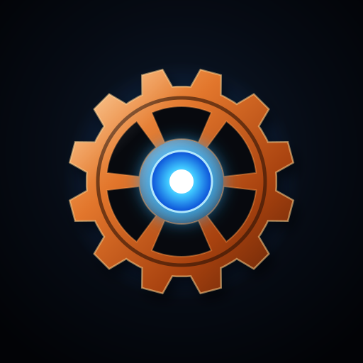

GearGrid: Overclock
Gizlilik Politikası
Bu politika, GearGrid: Overclock mobil oyununun ("Oyun") hangi verileri işlediğini açıklar. Oyunu oynamak için hesap açmanız, adınızı, e-postanızı veya telefon numaranızı vermeniz gerekmez.
1. Cihazınızda tutulan veriler
Yarım kalan oyununuz, rekorunuz, oyun sayınız, seçtiğiniz tema, dil, ses ve titreşim tercihleri yalnızca cihazınızda saklanır. Bu veriler bize gönderilmez. Cihazınızda Android'in otomatik yedekleme özelliği açıksa, Android bu verileri kendi Google hesabınıza yedekleyebilir ve oyunu yeniden kurduğunuzda geri yükleyebilir; bu yedeğe biz erişemeyiz. Verileri silmek için cihaz ayarlarından uygulama verilerini temizleyebilirsiniz.
2. Reklamlar (Google AdMob)
Oyun yalnızca isteğe bağlı ödüllü reklamlar gösterir; reklam izlemek zorunlu değildir. Reklamlar Google AdMob tarafından sunulur. AdMob; reklam kimliği, IP adresi, cihaz ve uygulama bilgileri ile reklam etkileşimlerini reklam göstermek, ölçmek ve sahtekarlığı önlemek için toplayabilir. Avrupa Ekonomik Alanı, Birleşik Krallık ve İsviçre'deki kullanıcılardan, Google'ın onay ekranı ile izin istenir; izin verilmezse reklamlar kişiselleştirilmez ya da gösterilmez. Ayrıntılar: Google Gizlilik Politikası ve Google'ın iş ortağı uygulamalarındaki veri kullanımı.
3. Kullanım istatistikleri (Firebase Analytics)
Oyunu geliştirmek için, onay vermeniz durumunda Google Firebase Analytics ile anonim kullanım istatistikleri toplarız: oyun başlangıcı ve bitişi, skor, ödüllü reklam tekliflerinin gösterilip kabul edilmesi gibi olaylar, uygulama örneği kimliği, cihaz modeli, işletim sistemi sürümü ve yaklaşık ülke bilgisi. Bu veriler sizi kişisel olarak tanımlamak için kullanılmaz ve satılmaz.
4. Çökme raporları (Firebase Crashlytics)
Oyun çöktüğünde veya bir hata oluştuğunda; hata kaydı, cihaz modeli, işletim sistemi sürümü, uygulama sürümü, son skor ve rastgele bir kurulum kimliği Google Firebase Crashlytics'e gönderilir. Bu bilgiler yalnızca hataları bulup düzeltmek için kullanılır.
5. İzinler
- İnternet: reklamlar, istatistikler ve çökme raporları için.
- Reklam kimliği (AD_ID): AdMob'un reklam gösterebilmesi için.
- Titreşim: oyun içi dokunsal geri bildirim için (ayarlardan kapatılabilir).
6. Seçimleriniz
- Cihaz ayarlarınızdan reklam kimliğinizi sıfırlayabilir veya kişiselleştirilmiş reklamları kapatabilirsiniz.
- Cihaz ayarlarından uygulama verilerini temizleyerek tüm oyun verilerini silebilirsiniz.
- Firebase'e gönderilmiş verilerin silinmesini aşağıdaki adrese yazarak isteyebilirsiniz.
7. Çocuklar
Oyun 13 yaşın altındaki çocuklara yönelik değildir ve bu yaştaki çocuklardan bilerek kişisel veri toplamayız.
8. Değişiklikler
Bu politika güncellenirse yeni sürüm bu sayfada, yürürlük tarihiyle birlikte yayınlanır.
9. İletişim
Sorularınız ve veri talepleriniz için: sahinkasim780@gmail.com
Privacy Policy
This policy explains what data the GearGrid: Overclock mobile game ("the Game") processes. You do not need to create an account or provide your name, e-mail address or phone number to play.
1. Data stored on your device
Your game in progress, best score, number of games played, selected theme, language, sound and vibration preferences are stored only on your device. This data is not sent to us. If Android's automatic backup is turned on, Android may back this data up to your own Google account and restore it when you reinstall the Game; we cannot access that backup. To delete it, clear the app's data in your device settings.
2. Advertising (Google AdMob)
The Game only shows optional rewarded ads; watching ads is never required. Ads are served by Google AdMob. AdMob may collect your advertising ID, IP address, device and app information and ad interactions to deliver and measure ads and to prevent fraud. Users in the European Economic Area, the United Kingdom and Switzerland are asked for consent through Google's consent form; without consent, ads are not personalized or are not shown. Details: Google Privacy Policy and How Google uses information from apps that use its services.
3. Usage statistics (Firebase Analytics)
To improve the Game, if you give consent, we collect anonymous usage statistics with Google Firebase Analytics: events such as game start and end, score, and whether rewarded ad offers were shown or accepted, an app instance ID, device model, operating system version and approximate country. This data is not used to identify you personally and is never sold.
4. Crash reports (Firebase Crashlytics)
When the Game crashes or an error occurs, the error log, device model, operating system version, app version, last score and a random installation ID are sent to Google Firebase Crashlytics. This information is used only to find and fix bugs.
5. Permissions
- Internet: for ads, statistics and crash reports.
- Advertising ID (AD_ID): so that AdMob can serve ads.
- Vibration: for in-game haptic feedback (can be turned off in settings).
6. Your choices
- You can reset your advertising ID or opt out of personalized ads in your device settings.
- You can delete all game data by clearing the app's data in your device settings.
- You can request deletion of data sent to Firebase by writing to the address below.
7. Children
The Game is not directed to children under 13 and we do not knowingly collect personal data from them.
8. Changes
If this policy changes, the new version will be published on this page with its effective date.
9. Contact
For questions and data requests: sahinkasim780@gmail.com